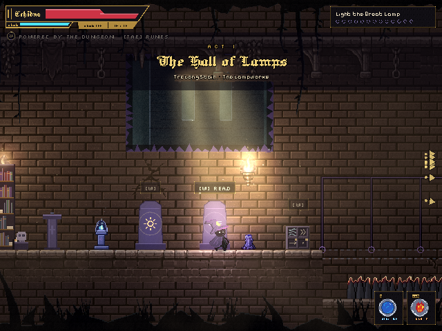

Game
The Sealed Belfry
A 2D puzzle-platformer I designed and built on my own. A young witch goes down into a sealed abbey to ring its great bell, solving rooms by writing four-word rune sentences onto stone cubes: wind, fire, ice, light and portals. Most rooms have more than one solution, and there's a Daily Puzzle and an Endless mode of generated rooms.